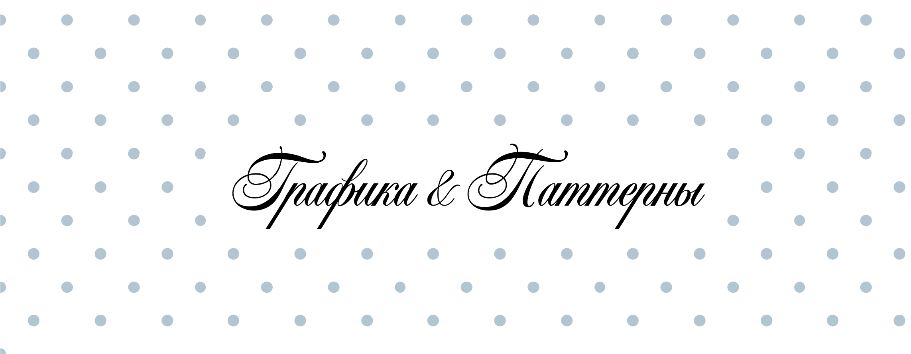

Графическая система «Вешалки» продолжает основную идею бренда — тему вышивки, строчки и ручной работы.
Все элементы построены так, чтобы сохранять ощущение тактильности и живой фактуры. В графике остаётся лёгкая неровность и ощущение физического процесса, благодаря чему визуальный стиль выглядит менее стерильным и более тёплым.
Графические элементы используются в социальных сетях, digital-носителях, фирменных макетах и дополнительных коммуникационных материалах.
Фирменная вешалка
Её форма была построена на основе окружностей, что позволило добиться плавной и сбалансированной конструкции. После создания базового вектора элемент был обработан с помощью генеративных инструментов для имитации машинной строчки. Затем графика повторно переводилась в векторный формат и дорабатывалась вручную.
Фирменная вешалка используется в графических композициях, на носителях, в постах и сторис, в паттернах, как дополнительный фирменный маркер.

Строчки
Элементы создавались вручную на швейной машинке, после чего переводились в цифровой векторный формат. Благодаря этому линии сохраняют естественную пластику и небольшую неровность, характерную для настоящего шва.
В системе используются:
- тонкая прямая строчка;
- декоративная строчка с более выраженным ритмом.
Фирменная рамка построена на основе stitched-линии и поддерживает общую визуальную систему бренда.
Она используется:
- для оформления карточек;
- выделения изображений;
- оформления цитат и текстовых блоков;
- в публикациях социальных сетей;
- в digital-макетах.
Рамка помогает структурировать композицию и добавляет визуальный ритм, сохраняя мягкость фирменного стиля.

Паттерны


Паттерны построены на основе повторяющихся круговых элементов и фирменной графики.
Они добавляют системе визуальный ритм и помогают делать макеты более узнаваемыми. Паттерны могут использоваться как самостоятельный фон или как дополнительный декоративный слой.
Нашивка
Дополнительным графическим элементом является фирменная нашивка с логотипом.
Она визуально отсылает к текстильным биркам и элементам одежды, поддерживая тему ткани, швейного процесса и материальности бренда.
Нашивка используется:
- как декоративный элемент;
- как визуальный акцент;
- в качестве водяного знака в публикациях;
- в постах и сторис;
- в mockup-материалах и носителях.